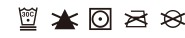

Material percentages may vary slightly. Check label for actual content.
Design is digitally printed first on raw fabric and then crafted into your product.
Premium quality guaranteed by certified manufacturers of well-known brands.
Please note: All fabric is made to order, and color variations may occur between different orders. We work only with trusted suppliers with excellent ethics, compliance, sustainability, and social responsibility track records. Casual Loose FitMade for everyday life, this t-shirt’s oversized design gives you a super relaxed fit, ensuring freedom of movement and total comfort.
Perfect for casual wear, school, daily life, and outings, as it’s easy to pair with jeans or shorts. This men’s hoodie can be worn alone or layered over a shirt. It goes well with jeans and chinos for a casual look. You can kick-it up a notch by pairing it with a bomber jacket on top for a hip and layered outfit. Whichever style you choose, you’ll feel comfortable and rock the look. Premium FabricThe four-way stretchy construction keeps you comfortable while wicking sweat away during any physical exercise.
Made of fibers with a high knitting density, creating a smooth fabric that is durable and light. It provides a wrinkle-free look over repeated wash and wear.
The spandex fibers for added stretch and retention. Classic ComfortAdvanced stitching techniques give incredible comfort as seams are softer, smoother, and designed to move with your body. They are re-enforced for durability. Eco-friendlyThe recycled polyester used in products is sourced from clear plastic water bottles. They are cleaned and turned into pellets that are spun into new, high-quality yarn to create our premium apparel and to reduce environmental impact.

Do not add fabric softener; Do not bleach; Tumble dry; Do not iron; Do not dry clean.